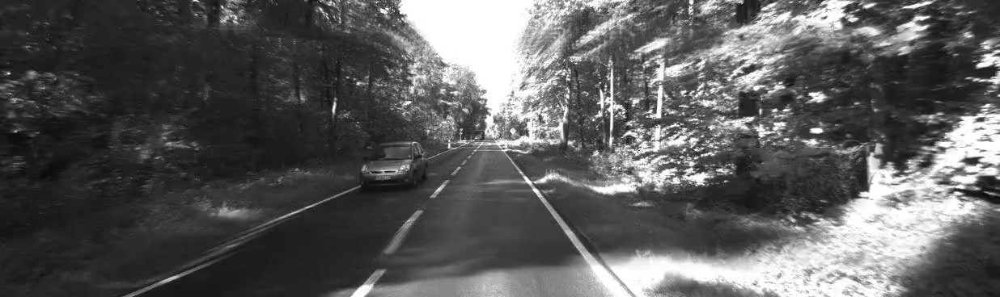

This project was inspired the opening sequence of the movie, Limitless, and from the powerful notion of finding point correspondences to automatically find homographies between images and create warps. The following sections detail the steps.
To automatically find high-quality point correspondences efficiently, we used the implementation of Scale-Invariant Feature Transform (hereafter, SIFT) built in to OpenCV in Python. SIFT consists of four steps.
Scale-space Extrema Detection applies an approximated gaussian to the images, and generates a pyramid. It uses this pyramid to search for local extrema over different scales, and over space. Different points are allowed to be represented in different scales.
Keypoint Localization removes local extrema that are below a desired threshold, and discards edge points using the Hessian to identify points with one eigenvalue significantly larger than the other. These points are discarded.
Orientation assignment calculates the gradient (depending on the scale) for the point in 36 orientations, and keeps the largest as the orientation innate to the point. This allows for rotational invariance.
Keypoint Descriptor, similarly to Harris Point Detector, creates feature descriptor for small blocks, and uses these descriptor to match points.
It is imperative that the dataset not contain any annotations or fixed points (such as, perhaps, a portion of the car), otherwise those points match too perfectly across frames, and no infinite zoom is visible. For example:
Once we had the point correspondences, we originally used OpenCV's findHomography function, with a RANSAC parameter, to generate the homographies between pairwise images. However, in our experiments, we found that 8-degrees of freedom is perhaps too many, as the images would sometimes warp too freely, with too much skew.
In order to counter this, we instead used the mis-named function, estimateRigidTransform, to compute a similarity transformation. Full affine transformations, too, turned out to be too non-restrictive, and the images tended to want to skew lines unnecessarily. Our hypothesis was that estimateRigidTransform would only work well if the dataset included images going mostly in a straight line, and that we would need to default to findHomography for datasets with turns. However, full projective homographies did not perform well on turns either, and similarity transformations gave us a better effect overall.
See the following videos for an example of full projective homographies stretching turns. Rigid transformations instead give the effect of a drift, which we found to be more visually appealing.
We start by giving each pair of images a fixed number of frames. For the purposes of this analysis, let this fixed number be . We also start by having a small number of images, draw_distance overlaid on each other. Note that we do not start with all images coexisting on the video frame at the first time step, since this would greatly slow down the algorithm. The draw distance should be chosen appropriately such that the furthest drawn image is approximately scaled down to nothingness. These images are overlaid after having been transformed by the computed homography (or similarity), so the effect is similar to that of a mosaic, except with the second image being completely inside the first.
Now, from the first frames, we need to animate the frames such that the first inner image is warping towards the outer image. We do this by linearly interpolating the four boundary points of the inner image towards the viewport, and getting a warp animation-matrix . is the only matrix applied to the outer image. This causes the outer image to be pushed out of frame with a seamless transformation.
For the first inner image, we apply , where is the homography (or similarity) matrix from the outer to the inner image. This first simulates the image being 'placed' inside the outer image, and then applied the animation.
For the second inner image, we apply . is applied to 'place' the second inner image on the placed first inner image. is applied for the animation. For inner image , we apply
Then, we begin the frame by placing the next image on the viewport, and by computing the new matrix. Now, the first inner image from the first frames has become the outer image, so the same process is repeated.
To smooth out the edges, we apply a blurred rounded-rectangle mask to each image, and transform this mask as we transform the images. This gets rid of the hard borders which appear on placing the images. The following images show the difference that masking creates.
No Mask
With Mask
The draw_distance changes the perception of the depth of the image drastically. In practice, we found that a sufficiently large (~100) draw distance works well for the effect we want to create, however, this depends on the data set. The primary concern with larger draw parameters is the computation time it adds. See the following images for comparison:

Draw Distance = 5
Some ghosting visible where the layering ends. Visually, does not provide much depth or a good zoom effect.
Draw Distance = 100
All lines converge to a small portion in the center, providing depth. Video looks like an infinite zoom. Significantly slower to compute
After generating some videos, we found that the warping speed was a little non-uniform. This made sense, since the world was sampled at a constant time offset, disregarding the speed of the moving object. The effect generated was an infinite zoom, but as if the rate of zoom is rapidly changing. To counter the nauseating bumps in time, we applied a speed correction.
Our approach stemmed from the geometrical interpretation of the determinant of a matrix, which is that the determinant captures the change in volume of a unit hypercube at the origin. We used the determinants of the homography matrix between pairwise images for both this approach, and the next. Naturally, all our determinants were smaller than unity, however, they varied vastly. The first key insight is that if the determinant of the homography between two successive images is large, then the object in question was moving at a relatively slow speed between these two frames, and vice versa. If the determinant is relatively large, then we ought to give this warp more frames than we do when the determinant is small. We used a simple linear \lstinline{speed_parameter} to fine-tune the speed at which the entire video should be played.
The determinant of a particular homography cannot be used directly to linearly control the number of frames given to the transformation between the respective pair of images, however. Instead, the second key insight is that we want the final video to have a constant "zoom per time" -- that is, the apparent rate of scaling of the images should be constant. Since the determinant of each homography represents the amount of scaling from one image to the next, we simply have to sample along the images such that effective scale between each sample is the same.
We can compute this in log-space to allow us to easily invert the function from image to cumulative scale and linearly interpolate:
We take the start scale to be , and the end scale to be . Then, the sample to take for frame out of is just:
Where is the index of the image to use as the outermost for that frame, and denotes the progress in the transformation from the outer image to the next image. is computed by linearly interpolating between the integer-spaced inputs.
The following videos show a side-by-side comparison of speed correction in action. The top video does not have speed correction, and the lower video has speed correction.
Notice how the top video seems to slow down and stutter at certain parts, while the bottom video has a consistent speed of zoom throughout. This effect is even more pronounced when the frames are taken at a less consistent speed.